Département du Var · SAÉ 401
Le Sentier
de Sillans
Axel BureauAngelito Gotti
Clément HanotGabin Stiff Tartereau
Situation actuelle
Sillans-la-Cascade en chiffres
369ha
Espace Naturel Sensible · Conseil Départemental du Var
42m
Hauteur de chute · plus haute cascade de Provence
1,3M€
Investissement · aménagements de protection
↑∞
Fréquentation en hausse · pression anthropique croissante
Tourisme
01 · Problème
Pression
touristique
touristique
↑∞
fréquentation
en hausse constante
en hausse constante
Zones critiques saturées
Travertins dégradés
Passage rapide
Interdictions ignorées
Signalétique punitive
vs
ENS
02 · Enjeu
Fragilité
écologique
écologique
10k
ans de
formation
formation
10 000 ans de formation
Espèce protégée
Baignade · feu interdits
ENS menacé · érosion
Arrêté préfectoral
Commanditaire — Département du Var
4 livrables attendus
01
Identité graphiqueLogo · charte · mascotte
02
Plan de communicationRéseaux sociaux · flyers · panneaux
03
Application WACarte GPS · médiation · parcours narratif
04
Médiation in situVisiteur acteur · interdits légitimés
Notre proposition

Avant
Le spot cascade
Un point de vue · une photo · passage rapide
→

Notre concept
Le sentier vivant
3,3 km · 10 POI · 1h30 · immersion narrative
01
Induire le mouvement · décongestionner
02
Visiteur acteur de la protection
03
Légitimer les interdits par le récit
Audit de la cible — 3 profils identifiés
Qui vient à Sillans, pourquoi, et quel impact ?
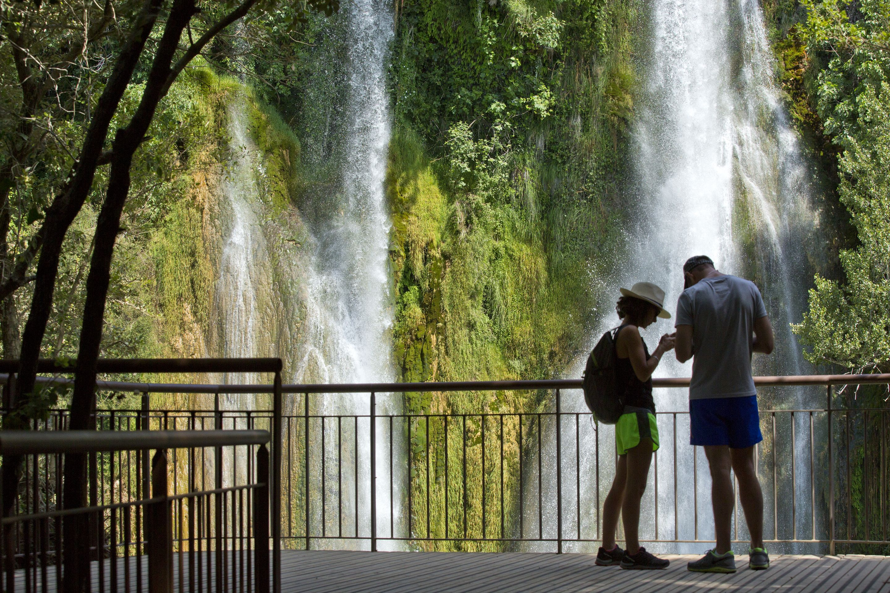
SI
L'Instagramer
Social Impulsif · TikTok / Instagram
« Faire la même vidéo que l'influenceur. »
Impact élevé · piétinement · zones interdites

NP
Le Visiteur GPS
Numérique Passif · Google Maps / Blogs
« Quoi faire autour de moi ? » — suit son GPS sans chercher d'infos.
Impact moyen · baignade si non signalé
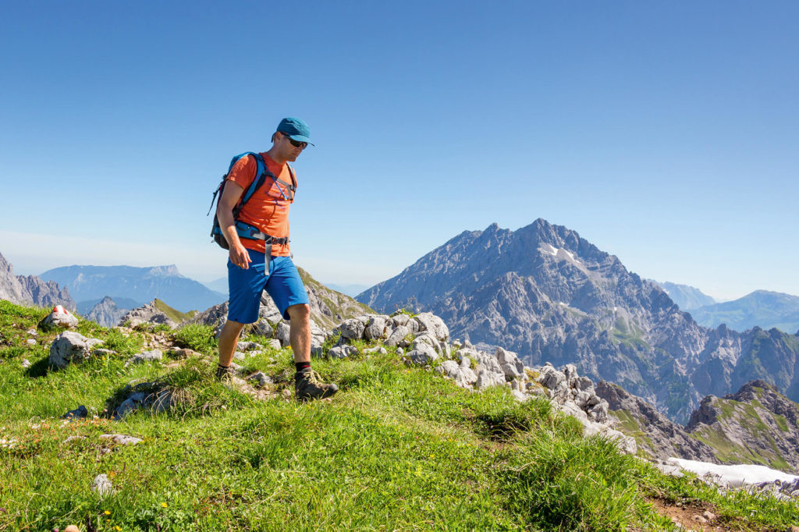
HP
L'Explorateur
Héritage Papier · Flyers / Hébergeurs
« Suivre l'itinéraire conseillé par le gîte. »
Impact faible · profil à valoriser
Stratégie de communication
Entonnoir par profil
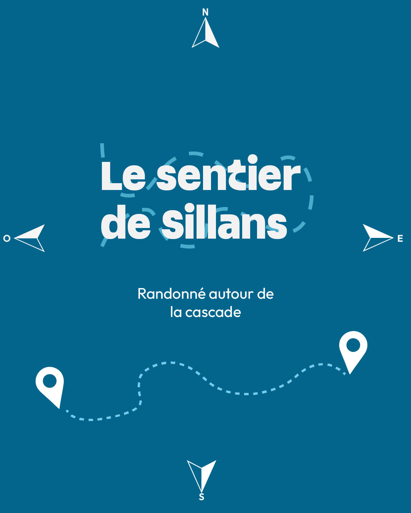
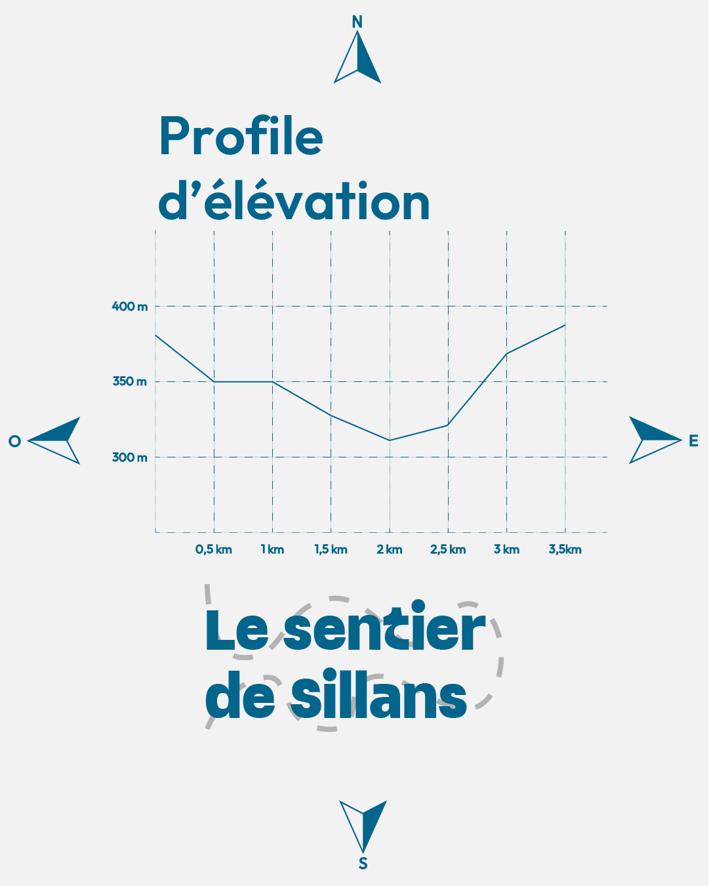
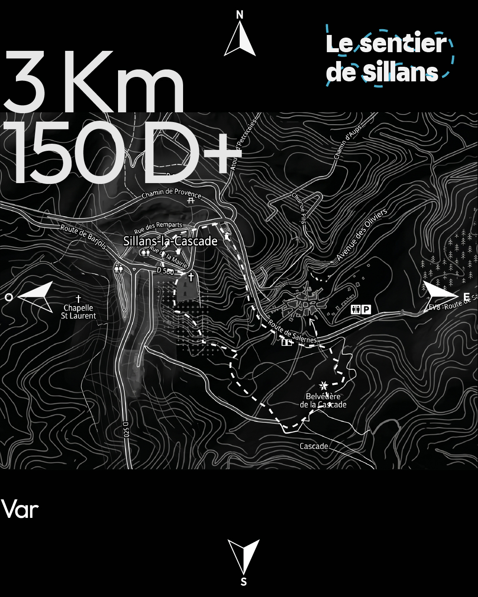
Réseaux Sociaux
Désaturation cascade · branding « randonnée »
↓
Flyers — Offices de tourisme
QR code · « La cascade se mérite »
↓
Panneaux sur le site
QR codes entrée sentier · étapes
↓
Web App — Le Sentier de Sillans
Médiation complète · offline · 10 POI
L'Instagramer
Désaturer la cascade sur les RS
Valoriser la « randonnée sportive »
SEO « Sentier » > « Baignade »
Le Visiteur GPS
Google Maps · mention interdiction
Alerte sur requêtes « baignade »
L'Explorateur
Flyer topoguide · biodiversité · technicité
Communication · Panneaux
Signalétique sur site
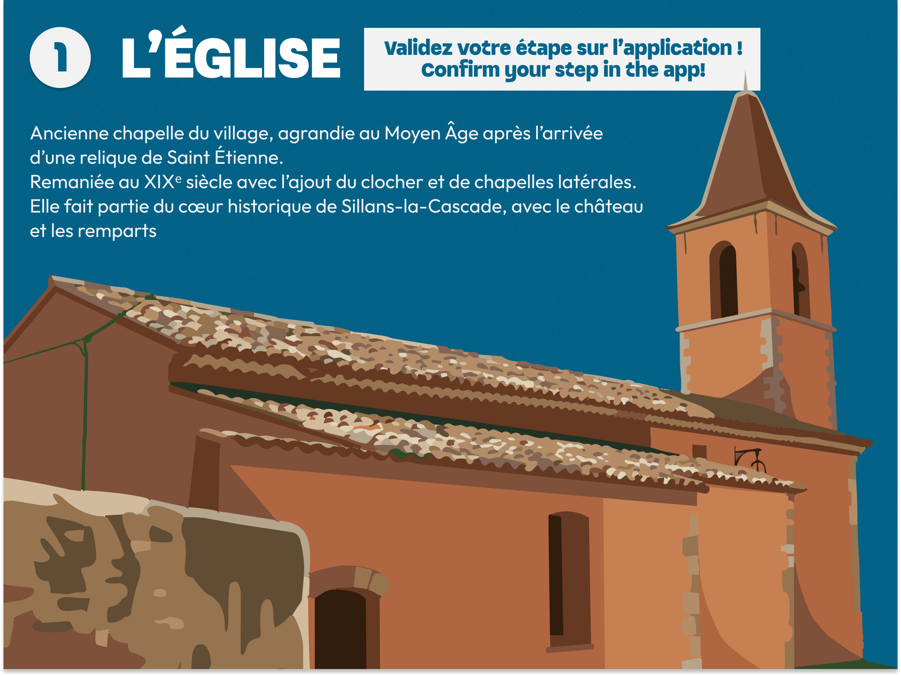
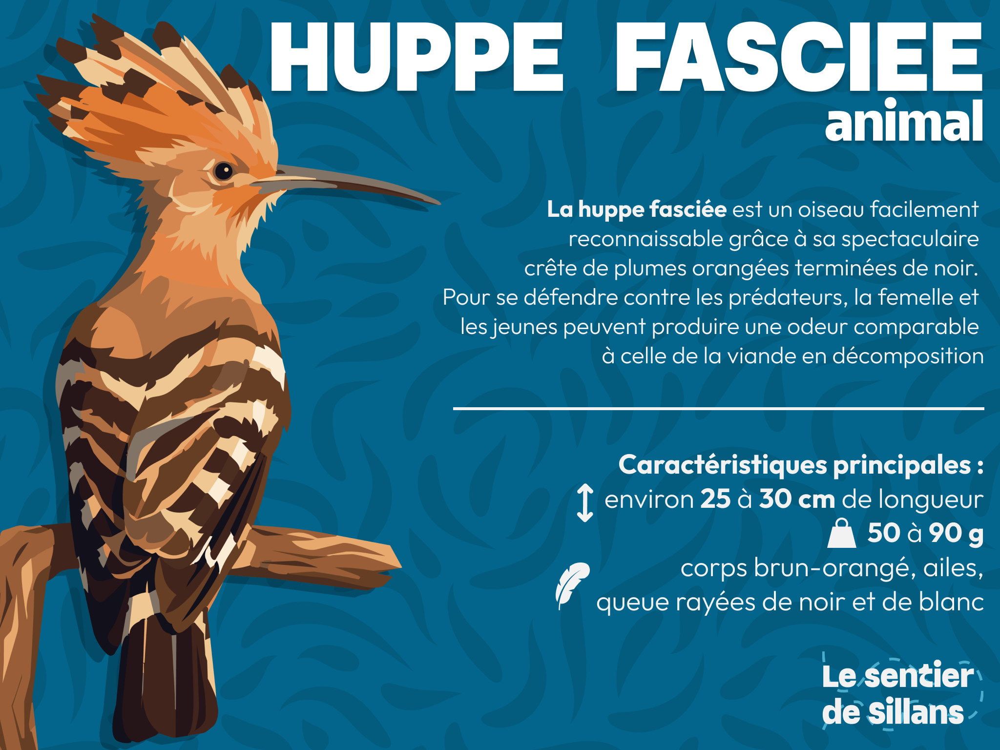
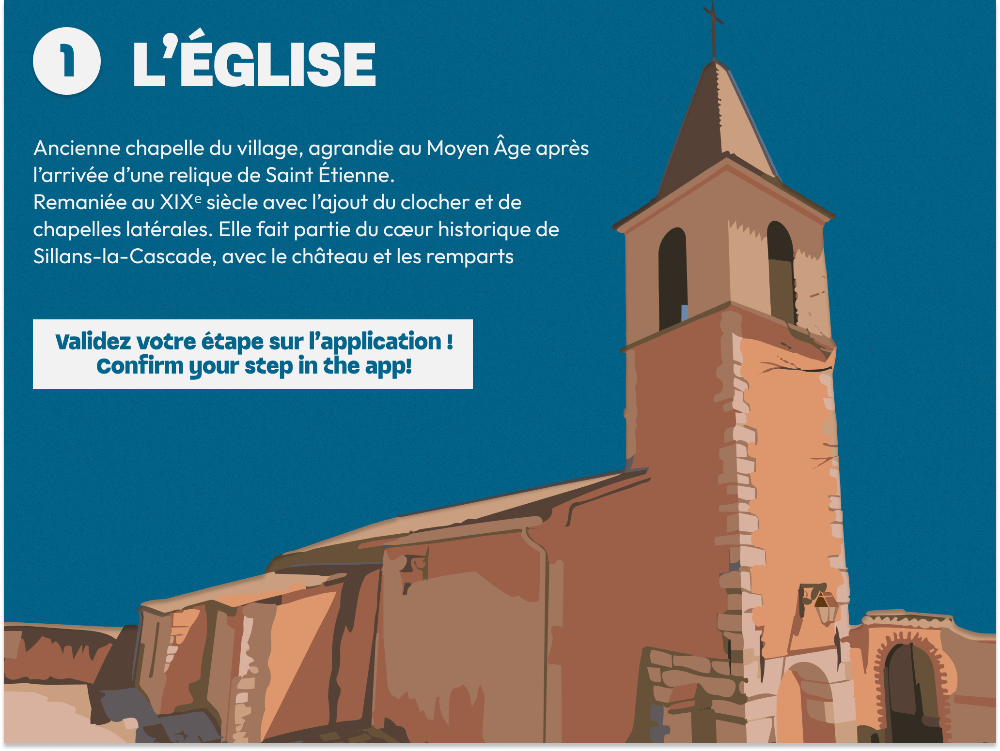
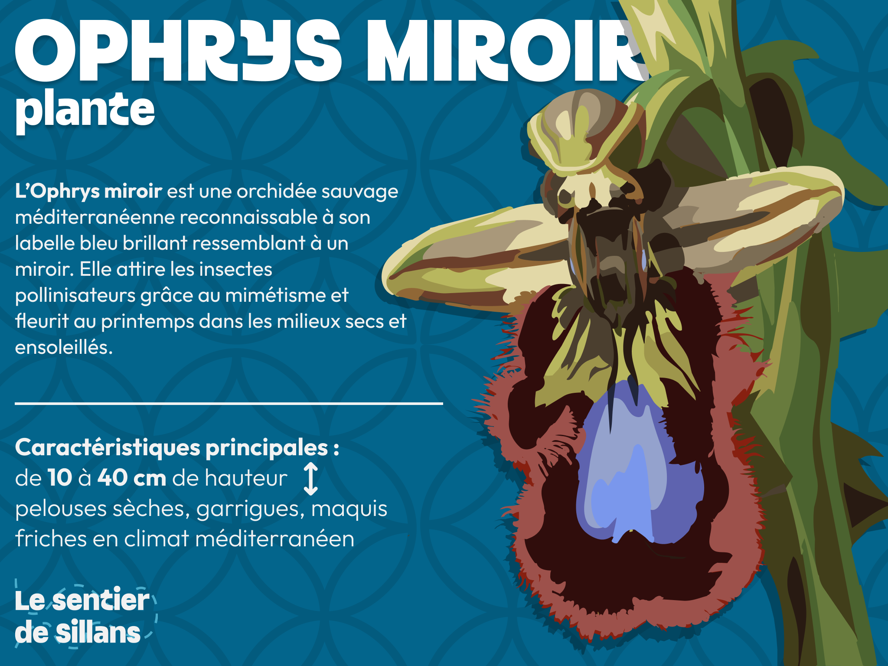
Charte graphique · Logotype
Le tracé du sentier
Principale
Fond bleu · typo claire · pointillés
Impression
Fond clair · flyers · supports papier
Header App
Horizontal · barre de navigation
Les pointillés symbolisent le cheminement — la cascade n'est qu'une étape d'un récit plus vaste
#03658C
Bleu Profond
Socle · header · interface
Eaux souterraines
Eaux souterraines
#48ADCC
Bleu Turquoise
Actions · highlights · trail
Vasques de la Bresque
Vasques de la Bresque
#F2F2F2
Gris Clair
Fond · lisibilité extérieur
Contraste maximal · plein soleil
Contraste maximal · plein soleil
#2a3540
Ardoise
Textes · contrastes
Roche · minéral
Roche · minéral
Dégradé
Signature visuelle
160deg turquoise→profond
Vignettes POI · accents
Vignettes POI · accents
Aa
Titres & Logo
Sillans
Marky Regular
H1 · H2 · boutons principaux
Sans-sérif artistique · courbes originales
Sans-sérif artistique · courbes originales
ABCDEFGHIJKLMNOPQRSTUVWXYZ
abcdefghijklmnopqrstuvwxyz · 0123456789
abcdefghijklmnopqrstuvwxyz · 0123456789
Aa
Sous-titres & UI
Sentier
Outfit Bold
Boutons · labels · étiquettes
Pivot titre / corps de texte
Pivot titre / corps de texte
ABCDEFGHIJKLMNOPQRSTUVWXYZ
abcdefghijklmnopqrstuvwxyz · 0123456789
abcdefghijklmnopqrstuvwxyz · 0123456789
Aa
Corps de texte
Nature
Outfit Regular
Paragraphes · descriptions POI
Lisibilité universelle
Lisibilité universelle
ABCDEFGHIJKLMNOPQRSTUVWXYZ
abcdefghijklmnopqrstuvwxyz · 0123456789
abcdefghijklmnopqrstuvwxyz · 0123456789
Conception — Figma
Du wireframe
au composant
01
Wireframes basse fidélitéStructure et hiérarchie des écrans · navigation validée
02
Prototype interactifFlux complet cliquable · validation avant développement
03
Composants réutilisablesBoutons · cartes POI · footer · cohérence garantie
04
Design tokensCouleurs · typographies · espacements · bridge design/code
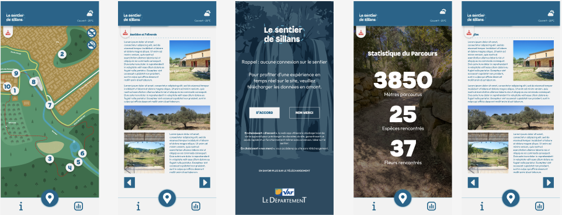
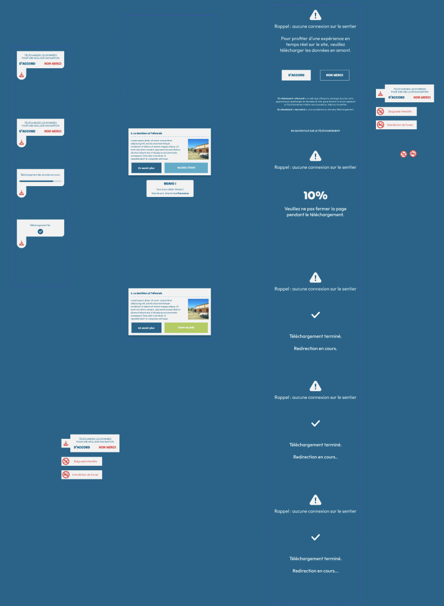
Parcours utilisateur
Du parking
à la cascade
Accueil & onboardingConnectivité · téléchargement offline · splash
Carte interactiveMétéo temps réel · 10 marqueurs POI
Découverte progressivePOI validé → suivant débloqué · galerie · glow carte
BilanDistance · durée · étapes validées
UX & UI — Justifications terrain
Pensé pour
la marche
Lisibilité extérieurFond #F2F2F2 · cibles 44px · contraste soleil
Navigation à une mainFooter bas · retour carte en 1 tap
Hiérarchie d'informationÉtape → Titre Marky → Corps Outfit · pas de surcharge
Animations signifiantesSwipe 0.32s · glow POI · scale modale
Fonctionnalités uniques
Ce qui rend l'app
indispensable
Mode hors-ligne completService Worker · 0 réseau requis sur le parcours
Validation gamifiée10 étapes · modale · progression motivante
Météo contextuelleAPI temps réel · avant et pendant le parcours
Interdictions dynamiquesBaignade · feu · icônes expansibles sur la carte
Esthétisme & choix artistiques
Une interface qui
s'efface devant
la nature
Minimalisme volontaireNe rivalise pas avec le site · sobre · discret
Carte illustréeGraphique vs satellitaire · identité visuelle cohérente
Dégradé signatureTurquoise→bleu profond · vignettes POI · charte
Un outil au service
du sanctuaire
Médiation numérique sobre · protection par la découverte
Sobriété
Mobilité douce
Médiation
ENS protégé
Merci · Questions ?